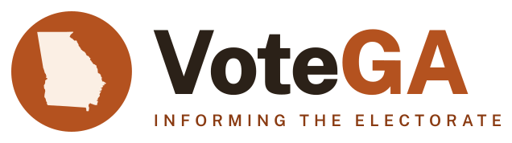
Horizontal, with tagline
votega-horizontalFinal artwork: every letter is outlined from Public Sans (SIL OFL), so these files render identically everywhere with no font dependency. Georgia is the US Census boundary; the peach is the secondary set. SVGs are in logo/svg/, PNGs (transparent) in logo/png/ and logo/png/web/.

votega-horizontalvotega-horizontal-notagline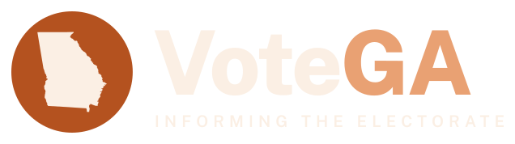
votega-horizontal-reversed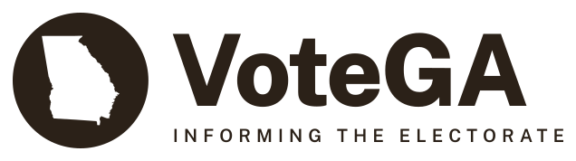
votega-horizontal-mono-ink
votega-horizontal-mono-cream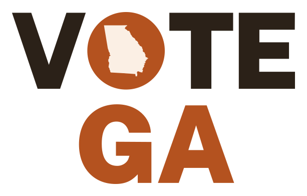
votega-stacked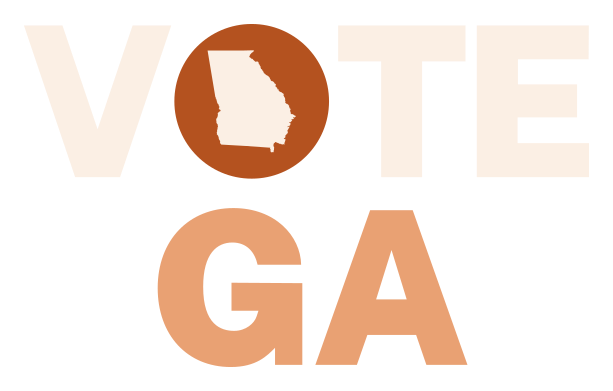
votega-stacked-reversedvotega-stacked-mono-ink
votega-stacked-mono-cream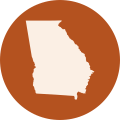
votega-mark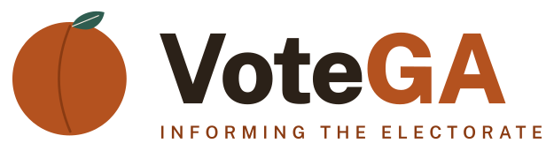
votega-peach-horizontal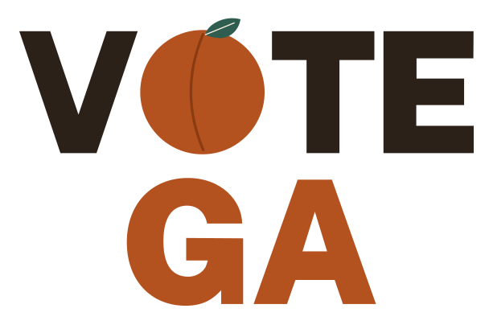
votega-peach-stacked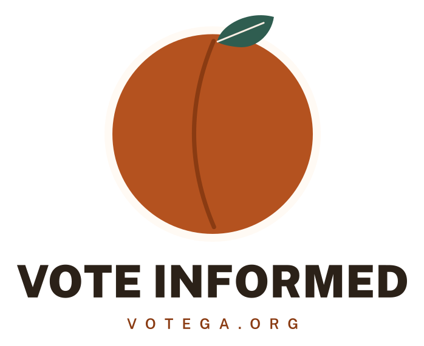
votega-peach-emblem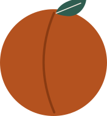
votega-peach-mark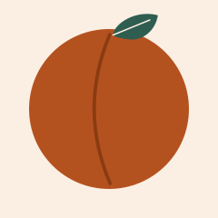
votega-peach-avatar